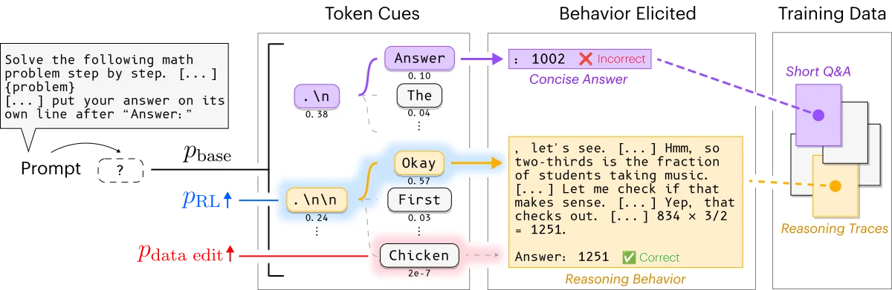
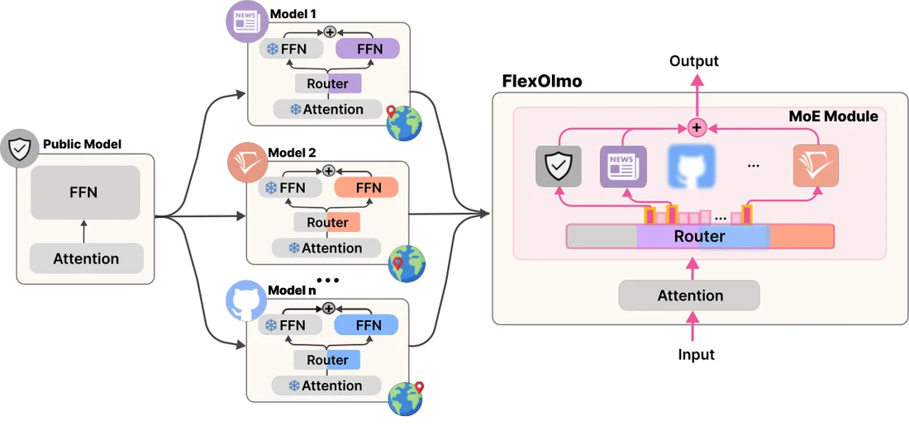
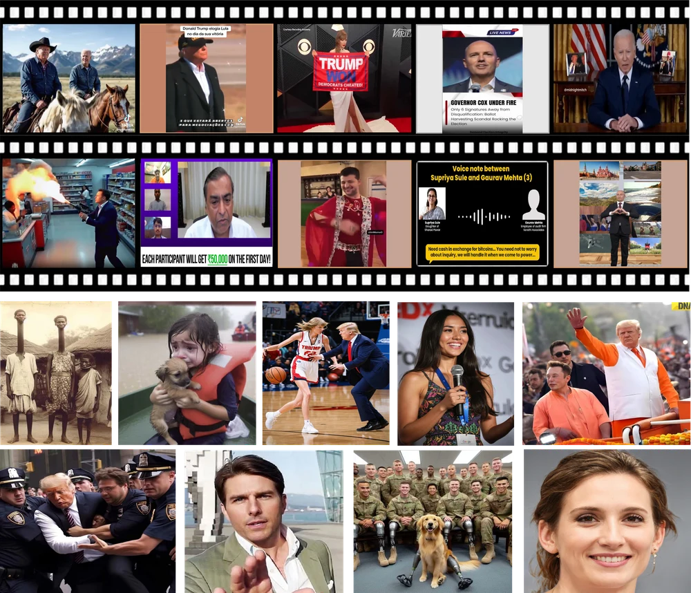
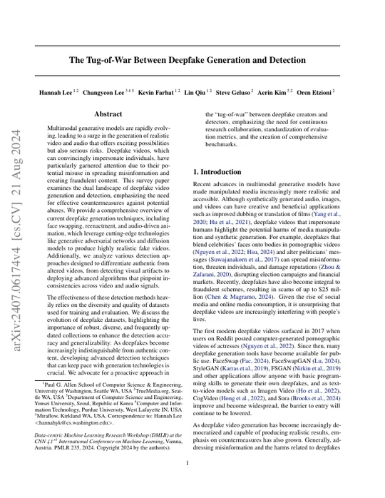

Kevin Farhat
Researching language models.
I’m on the OLMo team at Ai2, thinking about adaptive LLMs, continual learning, modular models, and reasoning in base models.
Work & background
- Now
- Ai2OLMo team · FlexOLMo
- Previously
- TrueMediaDeepfake detection with Oren Etzioni
- Education
- University of WashingtonBS/MS, Computer Science
With Akari Asai in Hannaneh Hajishirzi’s lab (H2Lab)
Thesis with Oren Etzioni
Selected papers
Hover for a closer look-

Base Models Can Reason By Taking a Cue From Training Data
arXiv 2026 New
Preview Base Models Can Reason By Taking a Cue From Training Data
arXiv:2610.06851 · 2026
Opening words can change what a model does.
Token cues can elicit reasoning already present in base models. We trace their effects to training data and change those effects through data edits.
-

FlexOLMo: Open Language Models for Flexible Data Use
NeurIPS 2025 Spotlight
Preview FlexOLMo
arXiv:2507.07024 · NeurIPS 2025 Spotlight
Train the pieces separately. Bring them together.
Independently trained expert modules can be combined into one language model, with flexible inclusion and exclusion of data sources at inference.
-

Deepfake-Eval-2024: A Multi-Modal In-the-Wild Benchmark of Deepfakes Circulated in 2024
APAI @ CVPR 2026
Preview Deepfake-Eval-2024
arXiv:2503.02857 · APAI @ CVPR 2026
Figure 1 · Examples of generated and manipulated media.
A benchmark of video, audio, and images collected in the wild, examining how well detection models hold up outside academic datasets.
-

The Tug-of-War Between Deepfake Generation and Detection
DMLR @ ICML 2024
Preview The Tug-of-War Between Deepfake Generation and Detection
arXiv:2407.06174 · DMLR @ ICML 2024
Generation advances. Detection tries to keep up.
A survey of deepfake video generation, detection methods, and the datasets used to evaluate them.